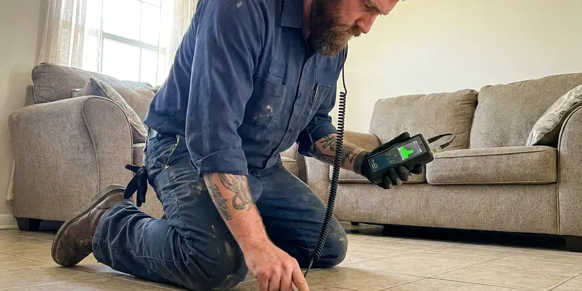

Sewer Line Inspection in Waukesha, WI
Buying a home or fighting repeat backups in Waukesha, WI? HKV Plumbing runs an HD camera through your sewer line and shows you precisely what is inside.
- Same-Day Camera Inspections
- Fast, Accurate Diagnostics
- Clear Pricing
- Depth and Location Markings

Get Your Sewer Line Checked in Waukesha, WI.
Call now to schedule a camera inspection and get a recorded video of your sewer line.
Detailed Sewer Line Inspection Services for Homebuyers and Owners in Waukesha, WI
HKV Plumbing provides sewer line inspections for homebuyers, sellers, property managers and homeowners with recurring drain issues. You get a recorded video, a written summary and straightforward repair recommendations if any are needed.
Our expertise includes:
- Recorded video and written reports for real estate transactions
- Sonde locating to mark depth and position of defects
- HD push camera inspection of 2 to 8 inch sewer lines

Additional Plumbing Maintenance Services in Waukesha, WI
Our maintenance and specialty plumbing services in Waukesha, WI catch small problems before they become emergencies.


Customers
Why Choose HKV Plumbing for Sewer Line Inspection in Waukesha, WI?
Older properties and homes on shifting soil are vulnerable to sewer line problems. Glacial soils in Wisconsin range from heavy clay to sand and gravel, which affects how water moves around foundations and buried lines.
- Clear Video, High-definition footage shows cracks, roots and offsets clearly.
- Preventative Care, Regular inspections can catch small issues before they escalate into major, expensive sewer line failures.
- Plain Explanations, We explain the findings in everyday language and recommend practical next steps.
Citywide Coverage
Wherever your property is in Waukesha, we can usually schedule a sewer inspection within a day or two. We work around real estate deadlines and inspection periods.
Experienced Team
Each HKV Plumbing technician is highly skilled in conducting detailed sewer line inspections, understanding the complexities of different piping materials and common problems found in Waukesha homes.
Safety-First Approach
All sewer line inspections conducted by HKV Plumbing are performed with the highest regard for safety and environmental responsibility. We make sure our methods are non-invasive and meet all industry standards, protecting your home and the local plumbing infrastructure.
Trusted Certified Waukesha Plumbing Services Professionals
At HKV Plumbing, we take pride in providing certified plumbing services throughout Waukesha, WI. Backed by recognized industry credentials, our experienced plumbers combine technical skill with genuine customer care. Whether it is repair, installation, or maintenance, we follow strict safety and quality standards to deliver lasting results you can trust.
Call Us Now PHCC Plumbing Contractor Recognition
PHCC Plumbing Contractor Recognition Better Business Bureau (BBB) Accreditation
Better Business Bureau (BBB) Accreditation Angi Certified Pro
Angi Certified Pro ISO 9001 Quality Management Certification
ISO 9001 Quality Management CertificationThorough Sewer Line Inspection Services in Waukesha, WI
Preventative Sewer Line Inspections in Waukesha, WI
Proactive maintenance is the best defense against major sewer line disasters. For homes and businesses in Waukesha, WI, especially those with older plumbing or significant landscaping, regular preventative sewer line inspections can catch minor issues before they become emergencies. We can identify early signs of root intrusion, minor cracks or sediment buildup, allowing for early intervention and extending the life of your sewer system.

Video Camera Inspection for Blockages in Waukesha
When drains slow down or stop completely, a blockage is often the cause. Our sewer camera inspection can pinpoint exactly where the blockage is located and what's causing it, whether it's grease buildup, foreign objects or sediment. This precision allows us to perform targeted clearing without unnecessary digging, saving you time and money. We can navigate bends and junctions to get a full view of the pipe's interior.
Post-Repair Sewer Line Verification in Waukesha
After any major sewer line repair or cleaning, it's good practice to verify the work. HKV Plumbing offers post-repair inspections to make sure that the problem has been fully resolved and that the pipe is in good working order. This verification provides peace of mind that your investment in repairs was effective and that your sewer system is functioning correctly, free of new blockages or remaining damage.
Commercial Sewer Line Inspections in Waukesha
Commercial properties in Waukesha require robust plumbing systems, and our commercial sewer line inspections help maintain their integrity. We handle larger diameter pipes and more complex systems, diagnosing issues that could disrupt business operations. From restaurants to office buildings, HKV Plumbing provides detailed inspections so your commercial property's drains are functioning correctly and compliant with local codes. Prevent expensive downtime with our expert service.
Locating Lost Items and Pipe Mapping in Waukesha, WI
Beyond diagnosing damage, our sewer cameras are also invaluable for locating lost items dropped down drains, such as jewelry or small tools. We can also use the camera's transmitter to accurately map the layout of your underground sewer lines, which is especially useful for older homes in Waukesha, WI where original blueprints might be unavailable or inaccurate. This mapping helps plan future landscaping or construction work.
Pre-Purchase Sewer Line Inspections in Waukesha
Buying a home is a significant investment. Don't let hidden sewer line problems surprise you after closing. HKV Plumbing offers pre-purchase sewer line inspections in Waukesha to give prospective homeowners a clear understanding of the property's underground plumbing health. This inspection can reveal costly issues like collapsed pipes, misaligned joints or old cast iron pipes, providing valuable leverage during negotiations.
Pre-Purchase Sewer Line Inspection in Waukesha
Standard home inspections usually do not include a camera look inside the sewer line. A pre-purchase inspection shows whether the line has roots, cracks, bellies or other problems before you close. That information can help you negotiate repairs or price with the seller. We provide a video and written report that fits most real estate timelines.

Cast Iron and Clay Pipe Condition Assessment in Waukesha
Many older homes have cast iron drain lines under the floor and clay sewer laterals outside. Cast iron can corrode and develop scale, cracks and channeling along the bottom of the pipe. Clay joints shift and let roots in. Our camera inspection shows how much life the pipe has left so you can plan repairs on your schedule.
Sewer Line Inspection Near Me in Waukesha, WI
When you need a sewer inspection for a home purchase or a recurring backup, a fast local appointment helps keep things on track. Our technicians serve all of Waukesha and can usually inspect within a day or two. We bring cameras, locators and cleaning equipment on each visit.
Our quick response and modern diagnostic tools make us the preferred choice for sewer line inspections throughout Waukesha. Don't let plumbing problems linger, call HKV Plumbing for fast and professional service near me.
HKV Plumbing at a Glance
- Fully licensed plumbing team covering Waukesha, WI
- Same-day appointments and 24/7 emergency response
- Clear written estimates, no hidden fees
- 4.8-star rated by 448+ Wisconsin customers
Waukesha Map
Waukesha Information
- Population
- 8,484
- Area codes
- 262/414/920
- Service area
- Waukesha and communities within 40 miles
- Nearby
- West Allis, Wauwatosa, Milwaukee, Racine
Shifting soil and foundation movement can stress buried pipe, so regular sewer line inspections help Waukesha, WI homeowners catch pipe damage early and prevent costly future repairs. Glacial soils in Wisconsin range from heavy clay to sand and gravel, which affects how water moves around foundations and buried lines.
Expert Services
Trust our professionals for reliable HKV Plumbing solutions in Waukesha, WI.
Our Specialized Plumbing Services in Waukesha, WI
At HKV Plumbing, we provide a complete range of plumbing services across Waukesha, WI. From leak detection to full system installations, our team ensures fast, precise, and affordable service for both residential and commercial properties. Explore our core services below:


How Our Sewer Line Inspection Process Works in Waukesha, WI
Our sewer line inspection process is straightforward and designed for minimal disruption to your Waukesha home. We provide clear communication every step of the way.
Request a Quote
Call (414) 432-4641 and tell us whether you need a pre-purchase inspection or have drain problems. We schedule a visit and give you the inspection price in advance.
Camera Inspection
We feed an HD camera through a cleanout or vent and record the full length of the line. Any problems are located and marked from above ground.
Review and Report
We review the video with you and explain each finding. You receive a copy of the video and a written summary with repair options.
Frequently Asked Questions About Sewer Line Inspection in Waukesha
The cost of a sewer line inspection in Waukesha, WI usually ranges from $200 to $500. This price can vary based on the length of the line, accessibility and the complexity of the plumbing system. Factors like emergency service or detailed mapping can influence the final cost.
Yes, especially for homes more than 20 years old or with large trees in the yard. Standard home inspections usually do not include a sewer camera. Finding a problem before closing can save you thousands.
Most residential sewer line inspections can be completed within 1 to 2 hours. More extensive systems or those with difficult access points might take a bit longer. Our goal is to be careful without wasting your time.
We use high-quality waterproof sewer cameras, often from brands like RIDGID or MyTana. These cameras are equipped with powerful LED lights and self-leveling heads to provide clear, high-definition video footage of the pipe's interior, even in dark or wet conditions.
No, a sewer line inspection is generally a very clean and non-invasive process. Our technicians access your sewer line through an existing cleanout, which is a capped pipe designed for plumbing access, usually located outside or in a basement. There is typically no digging involved.
Homes with older pipes or trees nearby benefit from an inspection every few years. Any home with recurring backups should be inspected right away. Commercial properties often schedule yearly inspections.
Most residential inspections take about one hour. Longer lines or lines that need clearing first can take two to three hours. We provide the video the same day.
HKV Plumbing uses industry-leading sewer camera equipment from trusted brands like RIDGID and Vivax-Metrotech. These professional-grade cameras offer excellent image quality, durability and accurate locating capabilities, so we get the clearest picture of your sewer line's condition.
What People Are Saying About Our Plumbing Experts?

Sofia M.
Two new toilets installed in one visit, no mess left behind, and the tech even adjusted a faucet he noticed was dripping. Fair pricing and really friendly.
Toilet Installation · Wauwatosa, WI
Emily R.
I called HKV Plumbing for plumbing repair, and the technician was fast, polite, and thorough. They explained the problem clearly and fixed it the same day. I will definitely hire them again. Highly recommended!
Plumbing Repair · Racine, WI
Mark T.
When our office needed drain cleaning, HKV Plumbing provided quick, reliable service. The plumber arrived on time and made sure every drain flowed perfectly before leaving. Very satisfied.
Drain Cleaning · Racine, WILaura S.
I scheduled a water heater replacement, and the team made the process smooth and affordable. The new unit works perfectly, and they cleaned up after completing the job.
Water Heater Replacement · Kenosha, WI
Daniel K.
A pipe burst at 11 pm and they actually answered. The plumber showed up within the hour, shut everything down, and had us back to normal the next morning. Could not ask for more.
Emergency Plumbing · Kenosha, WI
Robert G.
The trenchless sewer replacement saved our front yard. They walked us through the camera inspection footage first so we knew exactly what we were paying for.
Sewer Line Replacement · Wauwatosa, WI